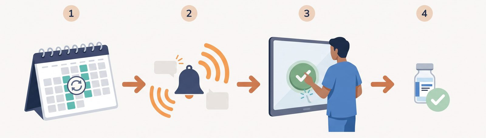

背景 — なぜ作ったか
在宅医療では、患者さんのご自宅に薬剤を届けて投与するケースがあります。なかには1回の投与に数十万円かかる高額な薬剤もあり、発注のタイミング管理は非常に重要です。
問題は、薬剤の発注パターンが「毎週月曜」のようなシンプルなものだけではないことです。「毎月第3週の火曜日」「隔週水曜日」など、患者さんごとに異なる複雑な周期で発注が必要になります。
これを担当者が手帳やカレンダーで管理していたため、発注を忘れてしまうリスクがありました。高額薬剤の発注漏れは、患者さんの治療に直結する深刻な問題です。

予定の登録から確認までの流れ（イメージ図）
導入前の課題
- 手帳やカレンダーによる手動管理で、発注漏れのリスク
- 「毎月第3火曜日」など複雑な周期パターンへの対応が困難
- 高額薬剤の発注忘れは患者さんの治療に直結
- 発注管理が属人的で、担当者不在時に対応できない
処理フロー
発注を登録（手動 or 定期テンプレートから自動生成）
▼
定期パターンを設定毎週 / 隔週 / 毎月第N曜日
▼
毎日自動チェック → 該当日に発注を自動生成
▼
段階的にリマインド通知事前 → 当日 → 期限超過で段階的に通知
▼
担当者が確認（発注する / 今回は不要）
導入効果
発注漏れゼロを実現。システム稼働以来、高額薬剤の発注忘れは一度も発生していません。
段階的リマインドで"うっかり忘れ"を防止。事前通知 → 当日3回 → 期限超過で毎時通知。どれだけ忙しくても気づける仕組みです。
属人化の解消。担当者が不在でも、通知はチーム全体に届くため対応が途切れません。
「以前は"あの薬、発注した？"と毎回確認していた。今は通知が来たらボタンを押すだけ。忘れようがない」
関連ページ
この仕組みについて相談する
おひさま会が自院で内製し、運用している実例をもとに、考え方や進め方をお伝えします。まずは手順書を読むだけでも構いません。
導入を相談する
手順書を読む